Case studyPlate I · Wearable · 2026
CDEFGAB
A wearable practice system that lets pianists train finger technique on any flat surface. No piano required: practice anywhere.
- Role
- Concept, hardware, signal processing, fabrication
- Tools
- ESP32-C3, six MPU-6050 IMUs, I2C multiplexer, Python, scikit-learn, WebSocket, Three.js, Web Audio API, Rhino
- Duration
- Six weeks
- Links
- Repository Demo video
Concept
Why a glovePiano keys fix the hand in one place. I wanted the note to follow the finger instead, which means the instrument has to read the body directly. The question that drove the whole project was how little hardware you can put on a hand and still tell which finger moved.
Coming from jewelry, the constraint that mattered most was that whatever sits on the fingers should feel like a ring, not a device.
Six MPU-6050 IMUs, one per finger and one on the wrist, route through a multiplexer to an ESP32-C3, which streams motion data to a browser-based étude engine with FM-synthesized audio.

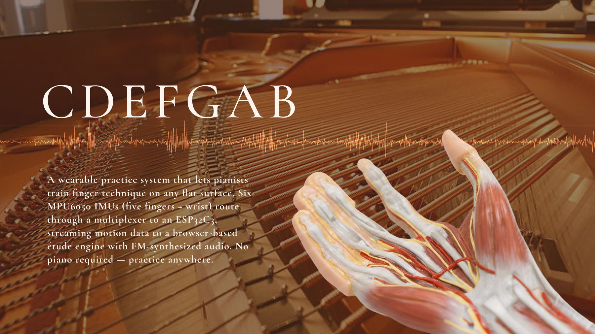
First attempt
sEMG on the forearmThree weeks went into a surface-EMG system reading two channels on the forearm. Offline it classified fingers at 81.6%. In the live test it fell to 52% and, more importantly, it could not tell when a press happened.
81.6% → 52%
Offline accuracy against live accuracy, five fingers, 25 trials.
The code splits dual-channel sEMG data into sliding windows, extracts signal and frequency features from each window, then adds cross-channel comparison features. These are organized into a table, cleaned, and used to train several classifiers: random forest, gradient boosting, an SVM with RBF kernel and KNN. The models are evaluated with five-fold cross-validation, and the best is selected and saved.

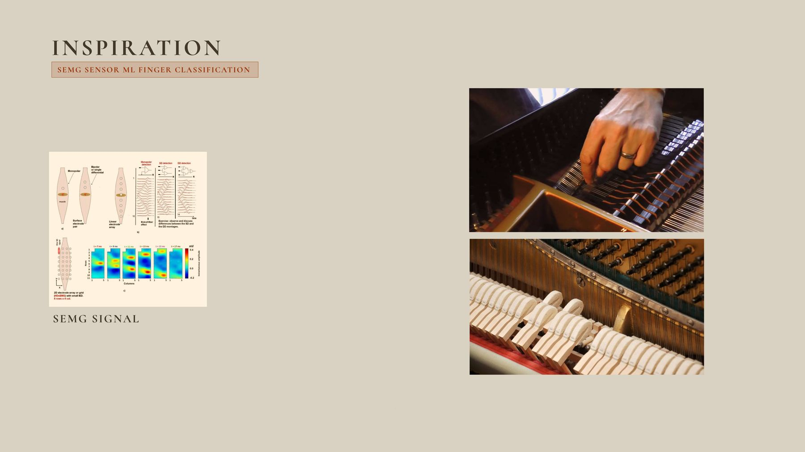

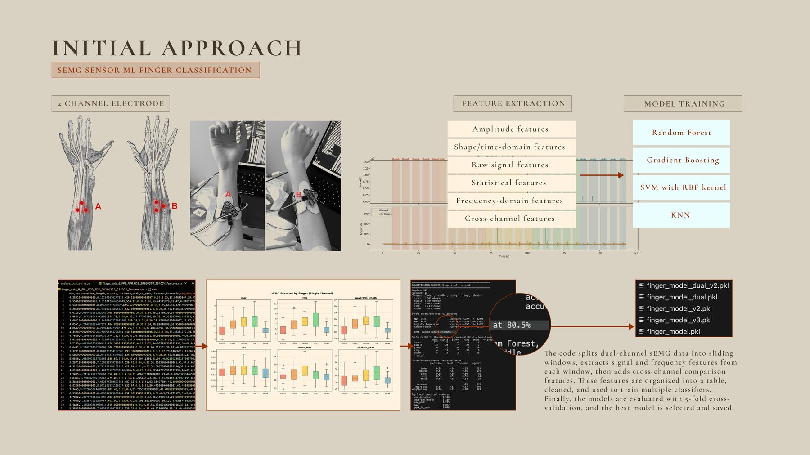
Challenge and pivot
To IMU sensorsThree papers confirmed the gap was hardware, not code: forearm EMG blurs adjacent fingers. So I moved the sensing onto the fingers themselves, one small IMU at the base of each.
Placing sensors at the base rather than the tip keeps the fingertips and joints free, so the hand moves naturally while the system still captures each finger on its own.

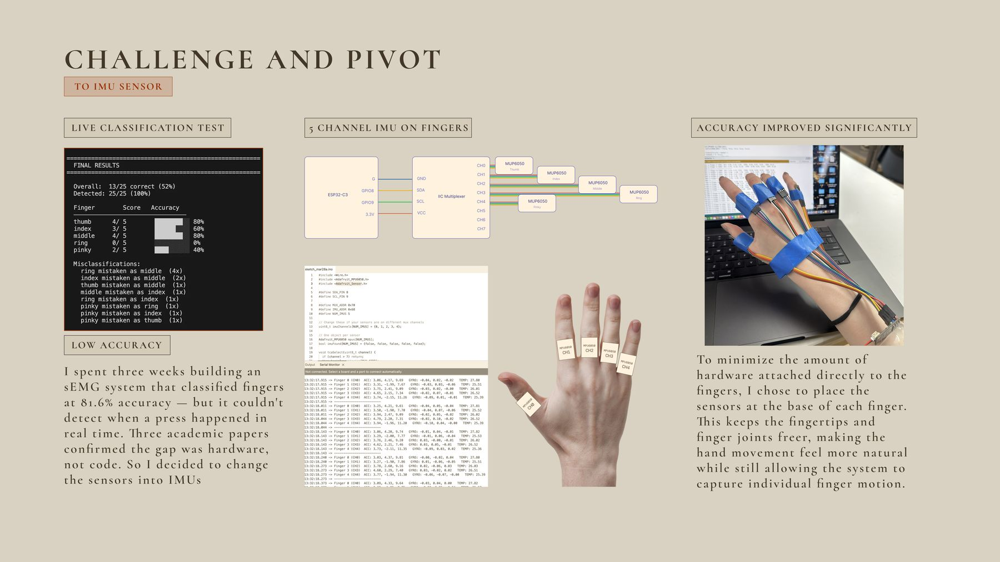
Development
ClassificationWith a sensor per finger the problem changes from classification to peak detection. A press shows up as a sharp rise in gyro energy, and the finger is simply whichever channel is loudest at the peak.
For wearability I swapped to smaller IMU boards and a round I2C multiplexer that sits flatter on the back of the hand.

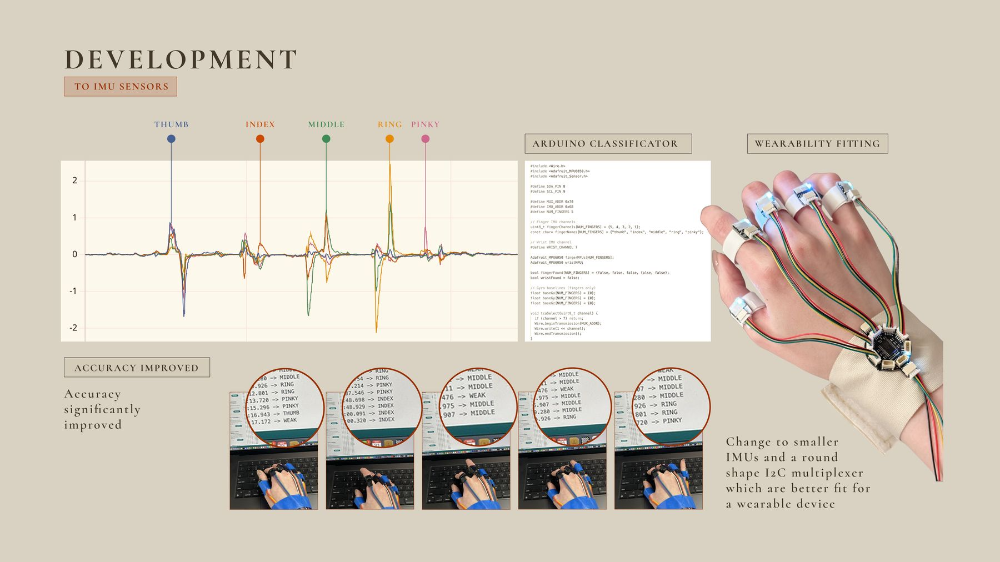

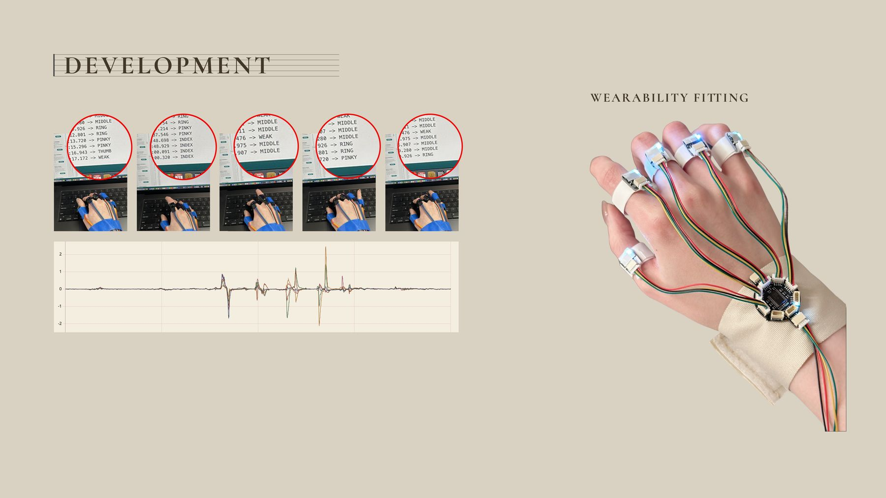
Web socket
ESP32 → Python → browserIn the new version the microcontroller becomes much simpler. Its only job is to read the IMUs, calculate basic gyro energy, and stream clean real-time data. The more complex logic, peak detection, finger selection, cooldown, velocity and WebSocket communication, moves to Python.
That makes the system easier to tune, debug, and expand. It also makes the browser interaction cleaner, since Python sends structured JSON messages straight through the WebSocket.
// Arduino: read, reduce, stream
float raw = abs(dgx) + abs(dgy) + abs(dgz);
Serial.println(raw);# Python: decide
if v > PEAK_THRESHOLD:
state[i] = TRACKING
elif v < tracked_peak[i] * DROP_CONFIRM:
state[i] = FIRED
ws.send(json.dumps({"finger": i, "velocity": v}))
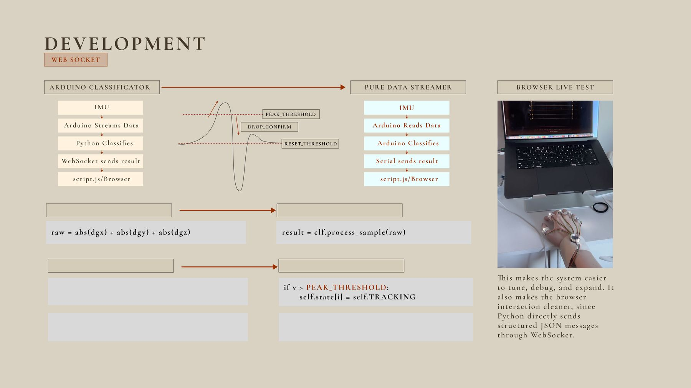
Hardware
CAD and CAMThe rings are the part of the project I care most about being right. Each housing is sized to the finger it sits on and holds the board so the wire leaves toward the back of the hand rather than across the knuckle.

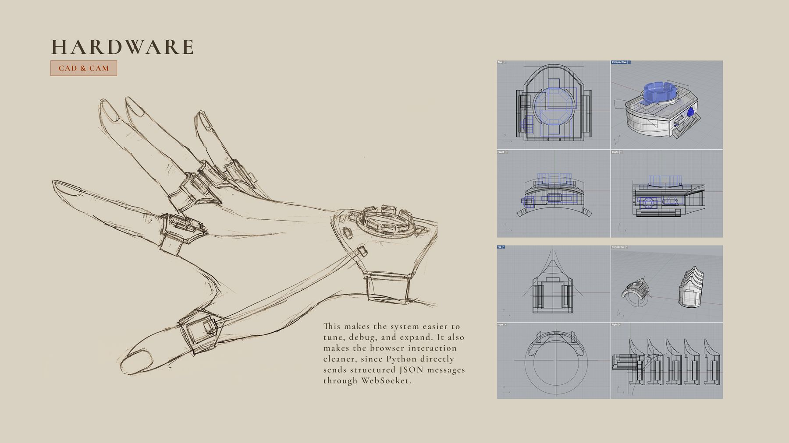

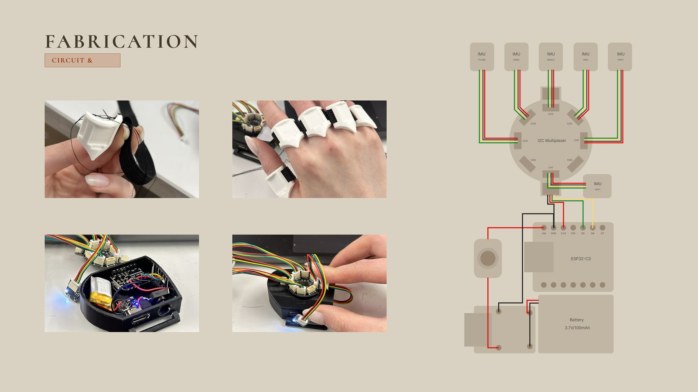
Front end
Three pages
Python reads the glove over Bluetooth serial, calibrates a two-second baseline
with per-finger and wrist offsets, and runs a tap classifier and a Schmitt-trigger
swipe detector. It sends {finger, velocity} and
{zoneShift: ±1} to the browser on port 8765.
The browser has three pages: a hero page with a 3D grand piano, a demo page for free play, and an étude page for guided practice. Sound is FM synthesis, six harmonics through a filter, in the Web Audio API.

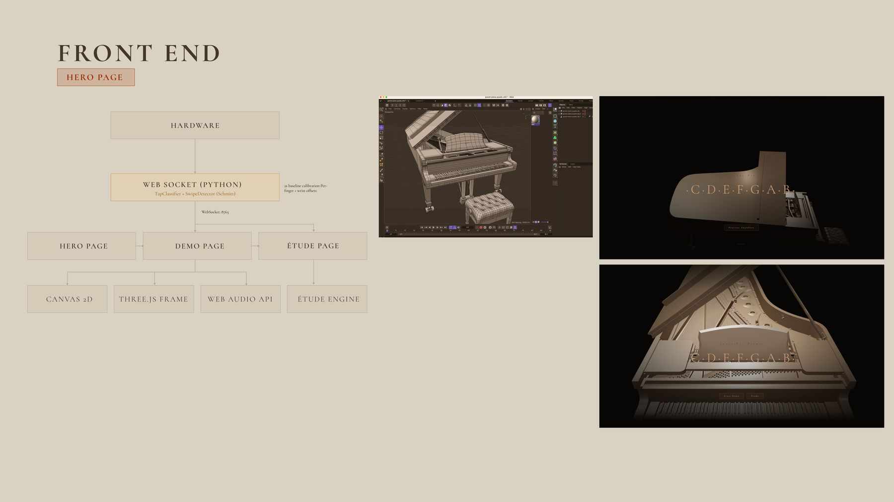
I abandoned the traditional keyboard visual and pivoted toward the piano’s internal structure. The strings make the musical mechanism more explicit, while also echoing the mechanical aesthetic of the hardware itself, making the interface feel less like a conventional music display and more like an extension of the hardware system.

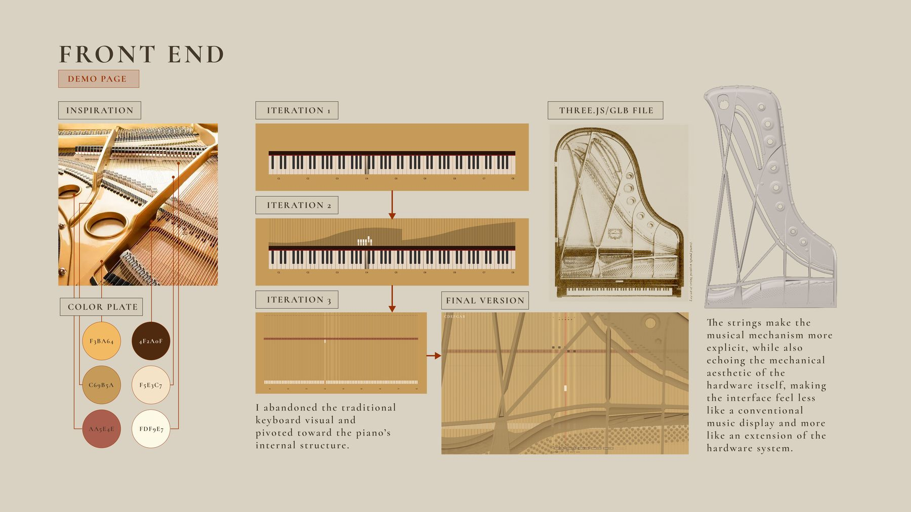
I chose Czerny Op. 849, No. 1 because it is a technical étude built from clear, repetitive finger patterns, which makes it suitable for testing a finger-based interaction system.
The score was first read by hand from the sheet music, then translated into a JavaScript data file. Each note carries its pitch, octave, duration and finger.
// piece_data.js
{ type: "note", pitch: "G", octave: 5,
duration: "triplet_eighth", finger: 5 },
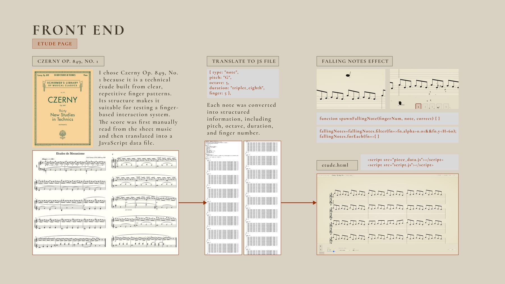
Outcome
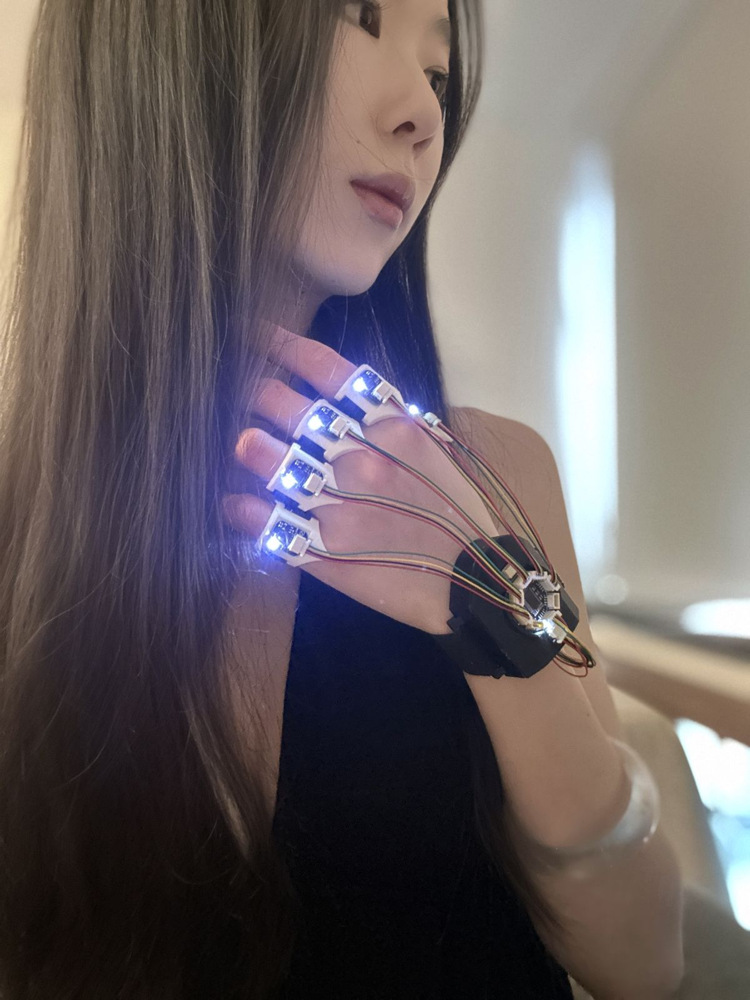
Five fingers, five notes, no keyboard. The biggest technical skills I picked up were WebSocket communication, bridging hardware serial data to a live browser interface, and Python model training with scikit-learn during the sEMG phase.
Next is refining the UI and interaction: tighter visual feedback and smoother zone transitions.